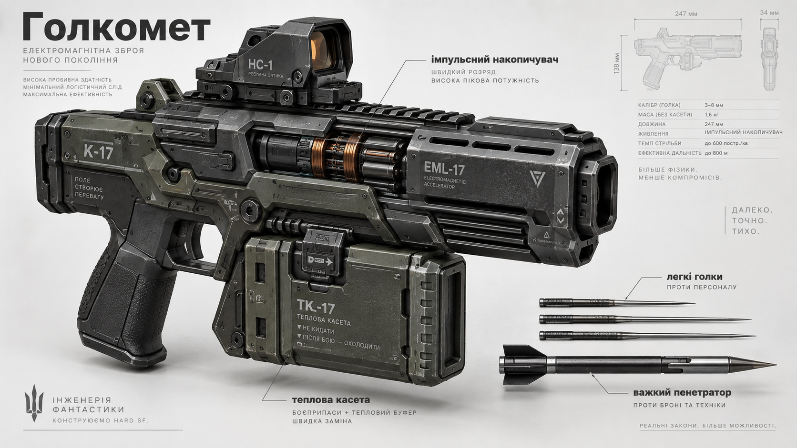
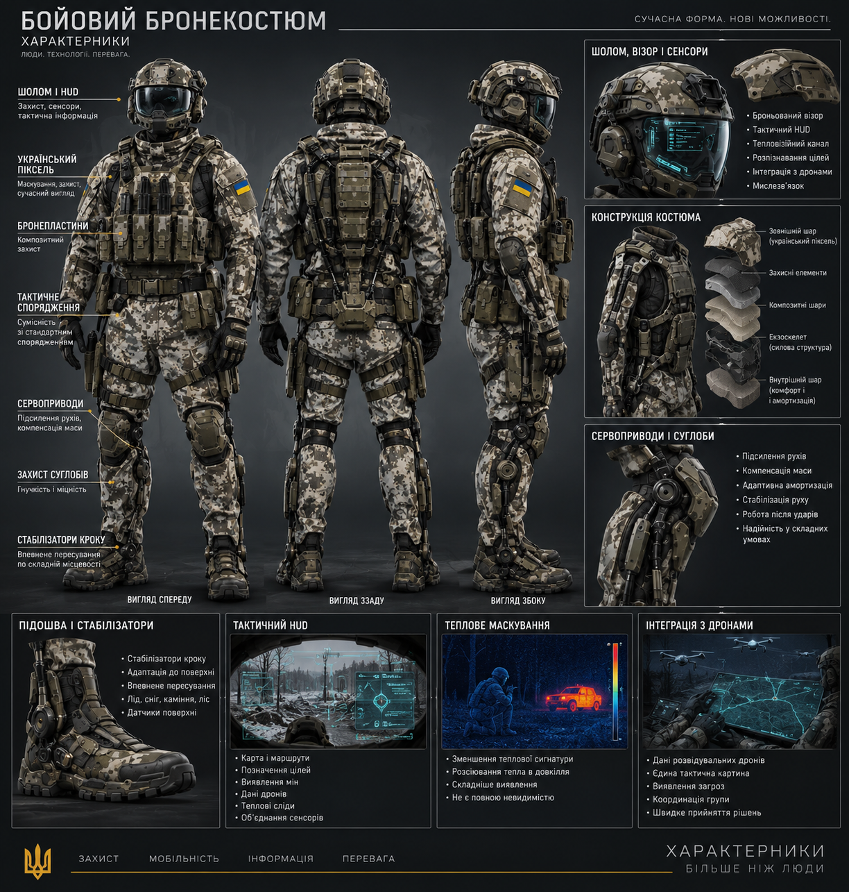

Бойові системи
Технології, безпосередньо пов'язані з боєм і захистом.
- Голкомет
- Бойовий бронекостюм
- Бойові та розвідувальні дрони
- Захисні системи
ТЕХНОЛОГІЇ ЛІТЕРАТУРНОГО ВСЕСВІТУ
Пристрої, системи та наукові рішення, які використовують люди й цивілізації у світі «Характерників».
ОРІЄНТОВНА СХЕМА
Розділ буде поступово заповнюватися окремими технічними статтями. Спочатку — системи, які вже детально присутні в тексті книг, далі — технології, що потребують окремого опису та узгодження з каноном.
Технології, безпосередньо пов'язані з боєм і захистом.
Системи зв'язку, обробки інформації та взаємодії людини з технікою.
Технології, що забезпечують роботу кораблів, станцій та космічних експедицій.
Великі системи, міста та технології повсякденного життя.
Технології, що виникають на стику фундаментальної науки та інженерії.
КАТАЛОГ
Тут з'являтимуться повні технічні сторінки з описом, принципом роботи, застосуванням у книгах та окремим позначенням того, що є каноном, а що потребує доповнення.

Гігантська протяжна інфраструктура, що поєднує житло, транспорт, виробництво, енергетику та захист.
ДЕТАЛЬНІШЕ →
Компактна бойова система з високошвидкісними металевими голками та модульним озброєнням.
ДЕТАЛЬНІШЕ →
Бойова система, що поєднує броню, сервоприводи, стабілізацію, сенсори та тактичний інтерфейс.
ДЕТАЛЬНІШЕ →Автоматизована оборонна система, що поєднує сенсори, дистанційне керування, мислезв'язок і серійне виробництво.
ДЕТАЛЬНІШЕ →
Активна багатоспектральна система маскування, що ускладнює виявлення та стабільне супроводження цілі.
ДЕТАЛЬНІШЕ →Орієнтовний каталог: дрони → штучний інтелект → мислезв'язок → голографічні системи → космічні кораблі → скафандри → міста-шляхи → підземні міста → захисні куполи → нові матеріали → енергетика → ядерні та планетарні технології.
Список робочий: конкретні технічні характеристики додаватимуться після звірки з текстом чотирьох частин книги.